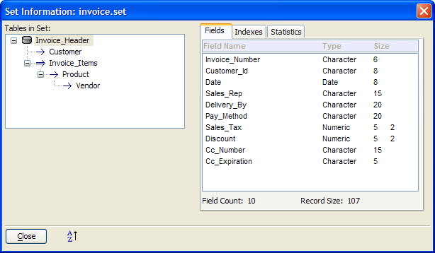
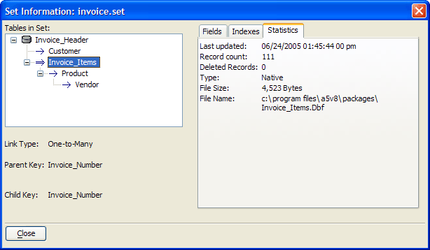

Table and Set Information Dialog Boxes
When you are viewing a form or browse, it is often helpful to see the structure of the table or set on which the form or browse is based. The View > Structure Information command displays the Set Information or Table Information dialog box. These dialog boxes provide quick summaries of table relationships (in a set), field and index characteristics, and database statistics.
The Fields tab displays the Field Name, Type, and Size for each field in the selected table.

The Indexes tab displays the filter, order, index flags values for each index.

The Statistics tab displays information about the size and location of the selected table.
